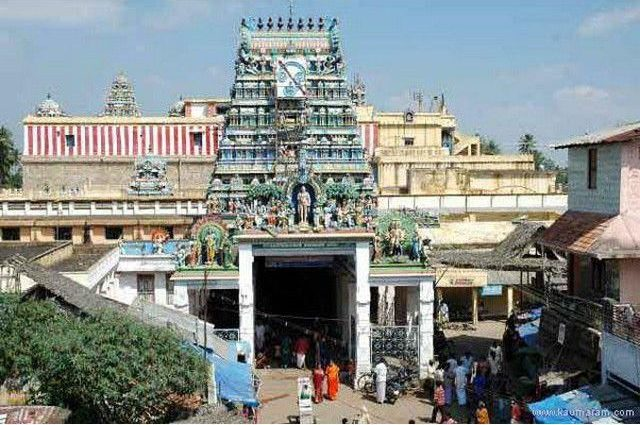

Swamimalai Murugan Temple
The Swamimalai Murugan Temple, also known as Swaminathaswamy Temple is situated in Swamimalai in Thanjavur district of Tamilnadu, which is dedicated to Lord Murugan and also one of the ‘Arupadai Veedu Temples’. It is said that, Swamimalai Murugan Temple was in existence from 2nd century BC, built by the King Parantaka Chola I. The mythology says that when Lord Brahma, the Lord of all creations, at the time of visiting Mount Kailash He disrespected Lord Murugan. The ever playful child Lord Murugan in angry asked Lord Brahma for the meaning of Pranav Mantra “OM”. Lord Brahma was unable to reply and admitted his ignorance towards Lord Murugan. And hence Lord Murugan knocked Lord Brahma on His forehead and imprisoned Him. All the creations came to a standstill, since Lord Brahma was imprisoned. And the Devas prayed Lord Shiva to get Lord Brahma released. When Lord Shiva asked Lord Murugan to release Lord Brahma from imprisonment, Lord Murugan demanded that the punishment was for His ignorance and unawareness of knowing the meaning of the Pranav Mantra “OM”. A sculpture in this temple denotes that Lord Murugan taught Lord Shiva about the meaning of Pranav Mantra OM
Lord Shiva asked Lord Murugan whether He Himself aware of the meaning of Pranav Mantra. Lord Murugan replied He knew the meaning and it will be taught only when Lord Shiva accept Him as Guru (Teacher) and listen to Him as a disciple. Lord Shiva accepted the request of Lord Murugan and listened to the explanation of Pranav Mantra as a devoted disciple, hence the place came to be known as Swamimalai. The temple placed on the hill is reached by climbing 60 steps which represents the sixty months of the ancient Tamil calendar.
Share This Website